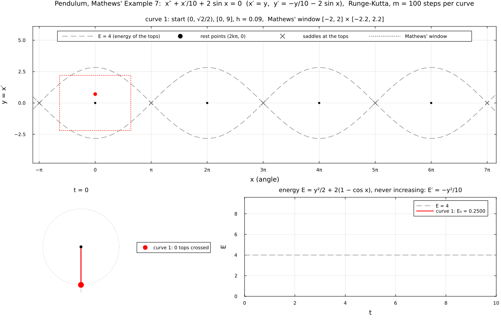

Pendulum
Source inspiration: (Mathew 2000-2019).
Description
A simple pendulum is a point mass \(m\) on a rigid rod of length \(l\) and negligible weight, swinging about a fixed pivot. If \(\theta(t)\) is the angle of the rod measured from the downward vertical, Newton’s second law for rotation gives the nonlinear pendulum equation
\[ \theta'' + \frac{g}{l}\sin\theta = 0 . \]
For small swings \(\sin\theta \approx \theta\), and the equation becomes the linear equation of simple harmonic motion, whose solutions are sines and cosines with period \(2\pi\sqrt{l/g}\) whatever the amplitude. The nonlinear equation has no solution in elementary functions, so Mathews solves it numerically: the substitution \(y = x'\) turns the second-order equation \(x'' = f(t, x, x')\) into the first-order system \(x' = y\), \(y' = f(t, x, y)\), and the classical fourth-order Runge-Kutta method is applied to that system in vector form, \(\mathbf{Z}_{j+1} = \mathbf{Z}_j + \tfrac16(\mathbf{k}_1 + 2\mathbf{k}_2 + 2\mathbf{k}_3 + \mathbf{k}_4)\) with \(\mathbf{Z}_j = (x_j, y_j)\). With a damping term \(\tfrac{1}{10}x'\) added, the module compares the linear and the nonlinear model in the \((t, x)\) plane (Examples 1 to 4).
The second half of the module draws phase portraits: curves \((x(t), y(t))\) in the plane of angle and angular velocity. Without damping (Examples 5 and 6) the energy \(E = \tfrac12 y^2 + \tfrac{g}{l}(1 - \cos x)\) is constant along every solution, so small swings are closed loops around the rest positions \(x = 2k\pi\), and swings with enough energy run over the top, round and round the pivot. With damping (Example 7) the energy decreases, the loops become spirals, and every curve of Example 7 tends to rest at one of the points \((2k\pi, 0)\). Every number on this page was recomputed: the Runge-Kutta runs with Mathews’ step counts (\(m = 100\); for Examples 5 and 6, whose inputs are lost, the \(m = 100\) of his Example 7), and the reference solutions with an adaptive eighth-order integrator at a tolerance of \(10^{-13}\).
Animations
Each animation below draws Runge-Kutta solutions (8) of the pendulum three ways at once: as a swinging pendulum, a rod and a bob at the computed angle \(x_j\) measured from the downward vertical; as a curve in the phase plane of angle \(x\) and angular velocity \(y = x'\), with the computed points \(\mathbf{Z}_j\) joined by straight segments as in Mathews’ graphs; and against time. The gray dashed curve in the phase plane is the level \(E = 2\omega_0^2\) of the energy, the energy of the pendulum at rest at the top. Every curve is computed with \(m = 100\) steps, Mathews’ step count (for Examples 5 and 6, whose inputs are lost, the \(m = 100\) of his Example 7). In Case 1 and in the first part of Case 3 the frames advance by steps; where several curves with different step sizes move together, the frames advance by time, and each curve shows its points with \(t_j \le t\).
Mathews’ module links no animation, and his animation archive has none for the pendulum, so all three animations are new, with no Mathews original. Case 1 animates Examples 1, 3 and 4, Case 2 the phase portrait of Example 6 with the curves this page chose, and Case 3 all fourteen curves of Example 7 with Mathews’ starting points, time intervals, plot windows and colours. Not animated are the analytic solution of Example 2, which differs from the Runge-Kutta values of Case 1 by less than \(10^{-3}\) at every grid point and could not be told apart from them, together with Example 1’s first step, error table and step-halving check; Example 5, whose portrait is Example 6’s with \(y\) divided by \(\sqrt2\) and time multiplied by \(\sqrt2\) (Example 6, Step 1); and the separatrix runs of Examples 5 and 6, which are drawn only as the dashed level curve.
Julia source scripts that generated these animations are linked under each case.
Case 1 — Examples 1, 3 and 4: \(x'' + \tfrac{1}{10}x' + 2x = 0\) against \(x'' + \tfrac{1}{10}x' + 2\sin x = 0\), \(x(0) = 1\), \(x'(0) = 2\), \(m = 100\), \(h = 0.2\)
Behavior: The linear pendulum (blue, the colour of Mathews’ analytic solution in Example 2) and the nonlinear one (red, his colour for Example 3) leave \(x = 1\) together, but the restoring term \(2\sin x\) is weaker than \(2x\), so the nonlinear pendulum swings wider at first and comes back later: its first swing reaches \(1.9766\) (\(113.25°\)) at \(t = 0.9963\), against \(1.7036\) at \(t = 0.6593\) for the linear one. Its first four extremes are wider than the linear ones; from the fifth on, the damping has had longer to act and they are slightly narrower. Each zero is marked in the time panel as it is passed: the linear solution crosses zero every \(\pi/\omega = 2.223\) time units, nine times on \([0, 20]\), the nonlinear one eight times, after half-swings that shorten from \(2.681\) to \(2.305\) as its amplitude decays (the last frame lists all seven). At \(t = 20\) the two pendulums hang on opposite sides of the vertical, at \(x_{100} = -0.3629\) (\(-20.79°\)) and \(0.3838\) (\(21.99°\)). In the phase plane both curves spiral in towards \((0, 0)\); the energy of the nonlinear run falls from \(2.919\) to \(0.4484\), below the dashed level \(E = 4\) throughout, so the nonlinear pendulum never goes over the top.

Case 2 — Example 6: \(x'' + 2\sin x = 0\), four closed loops and four rotations
Behavior: First, four pendulums start together at the bottom with speeds \(y_0 = 2\sqrt2\,k = 0.7071\), \(1.414\), \(2.121\) and \(2.687\) (\(k = 0.25\), \(0.5\), \(0.75\), \(0.95\)), swing out to \(28.96°\), \(60.00°\), \(97.18°\) and \(143.6°\), and come back to the start after one period, \(T = 4.515\), \(4.768\), \(5.405\) and \(7.326\) (diamonds in the time panel). Every period is longer than the linear period \(2\pi/\sqrt2 = 4.443\) (dotted), the widest swing by a factor of \(1.649\), so the pendulums fall out of step. Each loop closes on itself to within \(1.8 \times 10^{-5}\). Next, four rotations outside the dashed separatrix: from \((0, 3.536)\) and \((0, 4.243)\) the pendulum turns one way, from \((4\pi, -3.536)\) and \((4\pi, -4.243)\) the other way, a mirror image. Each run goes over the top twice, in \(2T_{\text{rot}} = 4.515\) and \(3.412\) time units, and is slowest at the tops, where \(|y|\) drops to \(2.121\) and \(3.162\). The last frame adds the loops of the first part started at \((2\pi, y_0)\) and \((4\pi, y_0)\): the same swings, with the angle counted after one and two full turns; their points are those of the first loops shifted by \(2\pi\) and \(4\pi\), to \(7 \times 10^{-14}\). The colours are those of Mathews’ Example 7 curves 1 to 8, which start at the same speeds except the widest loop (\(1.9\sqrt2\) here, \(2\sqrt2\) in his curve 4).

Case 3 — Example 7: the damped pendulum \(x'' + \tfrac{1}{10}x' + 2\sin x = 0\), Mathews’ fourteen curves
Behavior: The portrait is built curve by curve in Mathews’ order, each curve with his start, interval \([0, b]\), \(m = 100\) and colour, and with his plot window dotted around it while it is drawn (curve 4 has none: his window there is automatic); every curve stays inside its window. Curves 1 to 4 spiral towards \((0, 0)\) inside the dashed level \(E = 4\); curve 4 starts on it, with \(E_0 = 4\), and the damping takes it inside at once. Curves 5 and 6 start at the bottom with \(E_0 = 6.25\) and \(9\) and go over two and three tops. The energy panel marks the moment the energy falls below \(4\), at \(t = 6.554\) and \(t = 7.471\): from then on the pendulum can no longer pass a top, since \(E\) never increases, and it swings about \(x = 4\pi\) and \(x = 6\pi\). Curves 7 and 8 start at \(x_0 = 6\pi\) moving left, cross two and three tops, fall below \(E = 4\) at the same times, and are still swinging when their shorter intervals end. Curves 9 to 12 are curves 1 to 4 started at \(x_0 = 2\pi\), drawn together in their combined window. The last part redraws Mathews’ final figure, curves 5, 6, 7′ and 8′ on the longer intervals, with the other curves faded: 7′ and 8′ are 5 and 6 reflected through \((3\pi, 0)\), so their pendulums are mirror images and their energy curves coincide. The tops crossed are counted on the Runge-Kutta points, and the counts and the times at which \(E\) falls below \(4\) agree with the reference solution.

The Pendulum Equation
The nonlinear pendulum
The torque of gravity about the pivot is
\[ \tau = -m g l \sin\theta, \tag{1} \]
where \(\theta\) is the angle of the rod measured downward from the vertical; the minus sign says the torque turns the mass back toward \(\theta = 0\). The moment of inertia of the point mass is \(I = m l^2\), and Newton’s second law for rotation, \(\tau = I\alpha\) with angular acceleration \(\alpha = \theta''\), gives
\[ \tau = I \frac{d^2\theta}{dt^2}. \tag{2} \]
Equating (1) and (2):
\[ \frac{d^2\theta}{dt^2} + \frac{m g l}{I}\sin\theta = 0, \qquad\text{and with } I = m l^2:\qquad \frac{d^2\theta}{dt^2} + \frac{g}{l}\sin\theta = 0 . \tag{3} \]
The mass cancels: the motion depends only on \(g/l\).
The linear pendulum
If the angle stays small, the approximation \(\sin\theta \approx \theta\) in (3) gives the familiar linear equation of simple harmonic motion,
\[ \frac{d^2\theta}{dt^2} + \frac{m g l}{I}\,\theta = 0 . \tag{4} \]
With \(\omega_0 = \sqrt{m g l / I} = \sqrt{g/l}\) its general solution is
\[ \theta(t) = a_1 \cos(\omega_0 t) + a_2 \sin(\omega_0 t), \tag{5} \]
which has period \(T = 2\pi\sqrt{I/(g l m)} = 2\pi\sqrt{l/g}\). Written with a phase shift, the solution is
\[ \theta(t) = A \cos(\omega_0 t + \delta). \tag{6} \]
In (5) the period \(2\pi/\omega_0\) is the same for every swing. For the nonlinear equation (3) with amplitude \(\theta_{\max} < \pi\) the period is (a general result, derived from the energy below)
\[ T = \frac{4}{\omega_0} K(k), \qquad k = \sin\frac{\theta_{\max}}{2}, \qquad K(k) = \int_0^{\pi/2} \frac{d\phi}{\sqrt{1 - k^2 \sin^2\phi}}, \]
and \(K(k)\) grows from \(\pi/2\) at \(k = 0\) to \(\infty\) as \(k \to 1\). A swing to \(29°\) takes \(1.6\%\) longer than the linear period, a swing to \(60°\) \(7.3\%\) longer, and a swing to \(143.6°\) \(65\%\) longer (Example 5).
Energy and the phase plane
With \(x = \theta\) and \(y = \theta'\), equation (3) is the system \(x' = y\), \(y' = -\omega_0^2 \sin x\). A solution traced in the \(xy\)-plane is a phase curve, and a set of phase curves is a phase portrait. Mathews puts the angle \(x\) on the horizontal axis and the angular velocity \(y\) on the vertical axis; since \(x\) increases where \(y > 0\), curves are traversed clockwise.
For \(x'' + c\,x' + \omega_0^2 \sin x = 0\) with \(c \ge 0\), the energy (per unit \(m l^2\)) of the state \((x, y) = (x, x')\) is
\[ E(x, y) = \tfrac12 y^2 + \omega_0^2 (1 - \cos x), \]
kinetic energy plus potential energy, with \(E = 0\) at rest at the bottom and \(E = 2\omega_0^2\) at rest at the top.
Along any solution of \(x' = y\), \(y' = -c\,y - \omega_0^2 \sin x\),
\[ \frac{d}{dt} E\bigl(x(t), y(t)\bigr) = y\,y' + \omega_0^2 \sin x \; x' = -c\, y^2 . \]
So for \(c = 0\) every phase curve lies on a level curve \(E = E_0\), and for \(c > 0\) the energy never increases.
For \(c = 0\) the level curves give the whole picture. The equilibria are \((k\pi, 0)\). If \(E_0 < 2\omega_0^2\) and the start has \(|x_0| < \pi\), the pendulum swings back and forth, \(|x|\) never reaches \(\pi\), and the phase curve is a closed loop around \((0, 0)\) (and, since the equation is \(2\pi\)-periodic in \(x\), the same loops appear around every \((2k\pi, 0)\)). If \(E_0 > 2\omega_0^2\), \(y\) never vanishes and the pendulum runs over the top and round the pivot forever, \(y = \pm\sqrt{2E_0 - 2\omega_0^2(1-\cos x)}\). The level \(E_0 = 2\omega_0^2\) is the separatrix \(y = \pm 2\omega_0 \cos(x/2)\), which separates the two kinds of motion: a pendulum started on it at the bottom with speed exactly \(2\omega_0\) creeps toward the top \((\pi, 0)\) and never reaches it in finite time. Starting at \(x = 0\) with speed \(y_0\), the energy is \(E_0 = \tfrac12 y_0^2\), so the swing is a closed loop when \(y_0 < 2\omega_0\), a rotation when \(y_0 > 2\omega_0\), and the modulus in the period formula is \(k = y_0/(2\omega_0)\).
For \(c > 0\) the energy leaks away. The rest positions at the bottom, \((2k\pi, 0)\), attract nearby curves: there the linearised equation is \(u'' + c\,u' + \omega_0^2 u = 0\), and when \(c < 2\omega_0\) (as in Example 7, where \(c = \tfrac{1}{10}\) and \(2\omega_0 = 2.83\)) its solutions oscillate as they decay, so the curves spiral in. The tops \(((2k+1)\pi, 0)\) are saddle points. A curve with enough energy still runs over one or more tops, but each pass costs energy, and once the energy is below \(2\omega_0^2\) the curve is trapped in one well between two tops and tends to the rest position at its bottom.
Runge-Kutta Method for Second-Order Equations
To approximate the solution of the initial value problem
\[ x'' = f(t, x, x'), \qquad x(a) = \alpha, \qquad x'(a) = \beta, \qquad a \le t \le b, \]
substitute \(y = x'\). The second-order problem becomes the first-order system
\[ x' = y, \qquad y' = f(t, x, y), \qquad x(a) = \alpha, \quad y(a) = \beta . \tag{7} \]
More generally, the module’s two-dimensional solver handles any system \(x' = f_1(t, x, y)\), \(y' = f_2(t, x, y)\) with \(x(a) = \alpha\), \(y(a) = \beta\). It is the one-dimensional Runge-Kutta method in vector form, with the scalar \(f\) replaced by \(\mathbf{F}(t, \mathbf{Z}) = \bigl(f_1(t, x, y), f_2(t, x, y)\bigr)\), \(\mathbf{Z} = (x, y)\).
Given \(a\), \(b\), \(\mathbf{Z}_0 = (\alpha, \beta)\) and a number of steps \(m\), set \(h = (b - a)/m\) and \(t_j = a + j h\). For \(j = 0, 1, \ldots, m - 1\):
\[ \begin{aligned} \mathbf{k}_1 &= h\,\mathbf{F}(t_j, \mathbf{Z}_j), & \mathbf{k}_2 &= h\,\mathbf{F}\bigl(t_j + \tfrac{h}{2}, \mathbf{Z}_j + \tfrac12 \mathbf{k}_1\bigr), \\ \mathbf{k}_3 &= h\,\mathbf{F}\bigl(t_j + \tfrac{h}{2}, \mathbf{Z}_j + \tfrac12 \mathbf{k}_2\bigr), & \mathbf{k}_4 &= h\,\mathbf{F}(t_j + h, \mathbf{Z}_j + \mathbf{k}_3), \end{aligned} \]
\[ \mathbf{Z}_{j+1} = \mathbf{Z}_j + \tfrac16\bigl(\mathbf{k}_1 + 2\mathbf{k}_2 + 2\mathbf{k}_3 + \mathbf{k}_4\bigr). \tag{8} \]
The output is the list of points \(\mathbf{Z}_0, \ldots, \mathbf{Z}_m\). The first coordinates \(x_j\) approximate the solution \(x(t_j)\) of the second-order problem; plotting \((t_j, x_j)\) gives the solution curve, and plotting \((x_j, y_j)\) gives the phase curve.
The global error of the method is \(O(h^4)\) for a smooth \(\mathbf{F}\) (a general result), so halving the step should divide the error by about \(16\); Example 1 checks this.
Example 1 — Runge-Kutta solution of \(x'' + \tfrac{1}{10}x' + 2x = 0\)
Solve
\[ x'' + \tfrac{1}{10}x' + 2x = 0, \qquad x(0) = 1, \qquad x'(0) = 2, \]
over \([0, 20]\) with the Runge-Kutta method. This is a linear pendulum (or a mass on a spring) with \(\omega_0^2 = 2\) and a light damping term.
Step 1: Write the equation as \(x'' = f(t, x, x')\) with
\[ f(t, x, x') = -\tfrac{1}{10}x' - 2x . \]
Step 2: With \(y = x'\) the system (7) is
\[ x' = y, \qquad y' = -\tfrac{1}{10}y - 2x, \qquad x(0) = 1, \quad y(0) = 2, \qquad \mathbf{F}(t, (x, y)) = \bigl(y,\ -2x - \tfrac{y}{10}\bigr). \]
Step 3: Mathews takes \(m = 100\) steps on \([0, 20]\), so \(h = 0.2\). The first step, from \(\mathbf{Z}_0 = (1, 2)\), is
\[ \begin{aligned} \mathbf{k}_1 &= 0.2\,\mathbf{F}(0, (1, 2)) = (0.4,\ -0.44), \\ \mathbf{k}_2 &= 0.2\,\mathbf{F}(0.1, (1.2, 1.78)) = (0.356,\ -0.5156), \\ \mathbf{k}_3 &= 0.2\,\mathbf{F}(0.1, (1.178, 1.7422)) = (0.34844,\ -0.506044), \\ \mathbf{k}_4 &= 0.2\,\mathbf{F}(0.2, (1.34844, 1.493956)) = (0.2987912,\ -0.56925512), \end{aligned} \]
\[ \mathbf{Z}_1 = (1, 2) + \tfrac16(\mathbf{k}_1 + 2\mathbf{k}_2 + 2\mathbf{k}_3 + \mathbf{k}_4) = (1.3512785,\ 1.4912428). \]
The exact values (from Example 2) are \(x(0.2) = 1.3512965\) and \(x'(0.2) = 1.4912143\), so the first step is off by \(-1.8 \times 10^{-5}\) in \(x\).
Step 4: The remaining 99 steps are the same computation. The solution we want is the first coordinate \(x_j\); Mathews plots the points \((t_j, x_j)\) joined by line segments. The computed \(x_j\) range from \(-1.5140\) to \(1.6976\).
Verification: Example 2 finds the exact solution, and the table compares it with the Runge-Kutta values.
| \(t\) | Runge-Kutta \(x_j\) | exact \(x(t)\) | error \(x_j - x(t)\) |
|---|---|---|---|
| 0 | 1.000000 | 1.000000 | 0 |
| 4 | −0.038327 | −0.037891 | \(-4.37 \times 10^{-4}\) |
| 8 | −0.721000 | −0.720458 | \(-5.42 \times 10^{-4}\) |
| 12 | −0.928139 | −0.927942 | \(-1.97 \times 10^{-4}\) |
| 16 | −0.744575 | −0.744953 | \(3.79 \times 10^{-4}\) |
| 20 | −0.362889 | −0.363735 | \(8.47 \times 10^{-4}\) |
The largest error over the 101 grid points is \(9.84 \times 10^{-4}\), at \(t = 19.6\). With \(m = 200\) steps (\(h = 0.1\)) the error at \(t = 20\) falls from \(8.47 \times 10^{-4}\) to \(4.87 \times 10^{-5}\), a factor of \(17.4\), close to the factor \(16\) of a fourth-order method.
Example 2 — The analytic solution of \(x'' + \tfrac{1}{10}x' + 2x = 0\)
Find the analytic solution of the initial value problem of Example 1,
\[ x'' + \tfrac{1}{10}x' + 2x = 0, \qquad x(0) = 1, \qquad x'(0) = 2, \]
and plot it over \([0, 20]\).
Step 1: The characteristic equation \(r^2 + \tfrac{1}{10} r + 2 = 0\) has the complex roots
\[ r = -\frac{1}{20} \pm \frac{\sqrt{799}}{20}\, i . \]
Mathematica’s DSolve returns the solution in terms of the complex exponentials \(e^{\frac{1}{20}(-1 \pm i\sqrt{799})t}\), divided by \(1598\).
Step 2: In terms of real functions, with \(\omega = \sqrt{799}/20 = 1.413329\),
\[ x(t) = e^{-t/20}\cos\!\Bigl(\frac{\sqrt{799}}{20}\,t\Bigr) + \frac{41}{\sqrt{799}}\, e^{-t/20}\sin\!\Bigl(\frac{\sqrt{799}}{20}\,t\Bigr). \]
Step 3: In the phase-shift form (6), with a decaying amplitude,
\[ x(t) = A\, e^{-t/20} \cos(\omega t + \delta), \qquad A = \sqrt{\tfrac{2480}{799}} = 1.761783, \qquad \delta = -\arctan\frac{41}{\sqrt{799}} = -0.967200 . \]
The solution oscillates with the constant quasi-period \(2\pi/\omega = 4.445662\) inside the envelope \(\pm A e^{-t/20}\). On \([0, 20]\) its largest value is \(1.703585\) at \(t = 0.6593\) and its smallest is \(-1.524389\) at \(t = 2.8822\).
Verification: Substituting \(x(t)\) into the equation gives \(x'' + \tfrac{1}{10}x' + 2x = 0\) identically, \(x(0) = 1\), and \(x'(0) = -\tfrac{1}{20} + \tfrac{41}{\sqrt{799}}\cdot\tfrac{\sqrt{799}}{20} = 2\). The phase form agrees: \(A\cos\delta = 1\) and \(-A\sin\delta = 41/\sqrt{799} = 1.450476\).
Example 3 — The nonlinear pendulum \(x'' + \tfrac{1}{10}x' + 2\sin x = 0\)
Solve
\[ x'' + \tfrac{1}{10}x' + 2\sin x = 0, \qquad x(0) = 1, \qquad x'(0) = 2, \]
the damped nonlinear pendulum with \(g/l = 2\) and the same damping and starting values as Example 1.
Step 1: \(f(t, x, x') = -\tfrac{1}{10}x' - 2\sin x\), so the system is
\[ x' = y, \qquad y' = -\tfrac{1}{10}y - 2\sin x, \qquad x(0) = 1, \quad y(0) = 2 . \]
Step 2: As in Example 1, Mathews runs the Runge-Kutta method on \([0, 20]\) with \(m = 100\) steps, \(h = 0.2\), and plots \((t_j, x_j)\). The computed \(x_j\) range from \(-1.6613\) to \(1.9766\).
Step 3: The energy at the start is \(E_0 = \tfrac12 \cdot 2^2 + 2(1 - \cos 1) = 2.919395\), less than the energy \(2\omega_0^2 = 4\) needed to reach the top, and by the theorem above the energy can only decrease. So the pendulum swings back and forth and never goes over the top: the largest angle, \(x = 1.976621\) at \(t = 0.9963\), is \(113.25°\), below \(\pi\). By \(t = 20\) the energy has fallen to \(0.448391\).
There is no formula for the solution, so the check is against a reference solution computed with an adaptive eighth-order method at tolerance \(10^{-13}\).
Verification:
| \(t\) | Runge-Kutta \(x_j\) | reference \(x(t)\) | error |
|---|---|---|---|
| 0 | 1.000000 | 1.000000 | 0 |
| 4 | −1.624627 | −1.624579 | \(-4.76 \times 10^{-5}\) |
| 8 | −0.459815 | −0.460190 | \(3.75 \times 10^{-4}\) |
| 12 | 0.744494 | 0.744188 | \(3.06 \times 10^{-4}\) |
| 16 | 0.845528 | 0.845631 | \(-1.03 \times 10^{-4}\) |
| 20 | 0.383776 | 0.384286 | \(-5.10 \times 10^{-4}\) |
The largest error over the grid is \(5.89 \times 10^{-4}\), at \(t = 19.6\).
Example 4 — Linear or nonlinear: comparing the two models
Compare the graphs of the solutions of
\[ \text{(i)}\quad x'' + \tfrac{1}{10}x' + 2x = 0, \qquad \text{(ii)}\quad x'' + \tfrac{1}{10}x' + 2\sin x = 0, \qquad x(0) = 1, \quad x'(0) = 2 . \]
Mathews draws the two curves of Examples 1 to 3 together and asks: from the graphs, can you tell which is the solution of (ii)? How? (The archive has lost his figure and the command that drew it; the comparison below uses \([0, 20]\), the interval of Examples 1 to 3.)
Answer: The nonlinear pendulum (ii) swings more slowly. At the start the two curves leave \(x = 1\) together, but the restoring term \(2\sin x\) is weaker than \(2x\) for \(0 < x < \pi\) (at the first maximum \(\sin x / x = 0.465\)), so the nonlinear pendulum swings higher and takes longer to come back:
| linear (i) | nonlinear (ii) | |
|---|---|---|
| first maximum | \(1.7036\) at \(t = 0.659\) | \(1.9766\) at \(t = 0.996\) |
| first minimum | \(-1.5244\) at \(t = 2.882\) | \(-1.6614\) at \(t = 3.807\) |
| first zero | \(t = 1.7958\) | \(t = 2.4998\) |
| zeros on \([0, 20]\) | 9 | 8 |
| \(x(20)\) | \(-0.3637\) | \(0.3843\) |
The time between successive zeros is the same for every swing of the linear solution, \(\pi/\omega = 2.2228\). For the nonlinear solution it depends on the amplitude: between its eight zeros the seven half-swings last
\[ 2.681,\ 2.545,\ 2.459,\ 2.400,\ 2.359,\ 2.328,\ 2.305, \]
shorter at every swing as the damping shrinks the amplitude, approaching the linear value \(2.2228\) (near \(x = 0\) the linearisation of (ii) is (i)). By \(t = 20\) the nonlinear solution is one half-swing behind: its eighth zero, at \(t = 19.576\), comes at almost the same time as the linear solution’s ninth, at \(t = 19.578\), and at \(t = 20\) the two have opposite signs. Mathews’ conclusion is that the nonlinear equation of Example 3 is the better model; for angles as large as these, up to \(113°\), the approximation \(\sin x \approx x\) is poor.
Phase Portraits
The pendulum can also be explored with phase curves in the phase plane. Mathews solves the system (7) with the two-dimensional Runge-Kutta method (8) and plots the points \((x_j, y_j)\), joined by line segments, for several starting points; together the curves form a phase portrait that shows the features of the nonlinear pendulum that a graph of \(x(t)\) hides.
Example 5 — The undamped pendulum with \(g = 32\) and \(l = 32\)
Solve \(x'' + \dfrac{g}{l}\sin x = 0\) by the Runge-Kutta method applied to the system
\[ x' = y, \qquad y' = -\frac{g}{l}\sin x, \]
with \(g = 32\) and \(l = 32\), so that \(g/l = 1\) and \(\omega_0 = 1\): \(x'' + \sin x = 0\). The linear period is \(2\pi\sqrt{l/g} = 2\pi = 6.283185\), the separatrix speed at the bottom is \(2\omega_0 = 2\), and the energy at the top is \(2\omega_0^2 = 2\).
Mathews draws, in order: four closed loops around the origin; two curves where the initial velocity is large enough to make the pendulum keep turning about its pivot; two such curves turning in the opposite direction, started at a shifted point “to keep these curves from plotting in quadrant III” (in Example 7 the same remark reads \(x_0 = 6\pi\) instead of \(x_0 = 0\); here both values are among the lost images); then four closed loops around each of two further points. The archive has lost the Mathematica input and the figures of this example, and with them the starting points, the time intervals and the two further centres. The curves below are this page’s choice, made to match his description: they start at \(x_0 = 0\) with speed \(y_0 = 2\omega_0 k\), where \(k\) is the modulus of the period formula, for \(k = 0.25, 0.5, 0.75, 0.95\) (loops) and \(k = 1.25, 1.5\) (rotations), and each is computed with 100 Runge-Kutta steps, as in Mathews’ Example 7.
Step 1 — four closed loops around the origin. Each loop is run for exactly one period \(T = 4K(k)/\omega_0\), so the curve should close on itself.
| \(k\) | \(y_0\) | \(\theta_{\max} = 2\arcsin k\) | period \(T\) | \(T \,/\, 2\pi\) | RK4 closure error | largest \(\lvert E - E_0 \rvert\) |
|---|---|---|---|---|---|---|
| 0.25 | 0.5 | 0.5054 \((28.96°)\) | 6.384969 | 1.0162 | \(4.0 \times 10^{-7}\) | \(1.1 \times 10^{-8}\) |
| 0.50 | 1.0 | 1.0472 \((60.00°)\) | 6.743001 | 1.0732 | \(7.3 \times 10^{-7}\) | \(7.4 \times 10^{-8}\) |
| 0.75 | 1.5 | 1.6961 \((97.18°)\) | 7.643959 | 1.2166 | \(8.7 \times 10^{-7}\) | \(4.0 \times 10^{-7}\) |
| 0.95 | 1.9 | 2.5065 \((143.61°)\) | 10.360045 | 1.6489 | \(1.7 \times 10^{-5}\) | \(3.1 \times 10^{-6}\) |
The periods from the elliptic integral agree to all six decimals with the time between successive upward crossings of \(x = 0\) in a reference solution. The closure error is the largest coordinate of \(\mathbf{Z}_{100} - \mathbf{Z}_0\), and the last column is the largest drift of the energy over the 101 points. Each loop reaches \(|x| = \theta_{\max}\) and \(|y| = y_0\).
Step 2 — two curves that keep turning. With \(y_0 = 2.5\) (\(k = 1.25\)) and \(y_0 = 3\) (\(k = 1.5\)) the energy is above \(2\), \(y\) stays positive, and the pendulum goes over the top. The time to advance by \(2\pi\) is
\[ T_{\text{rot}} = \frac{2}{k\,\omega_0} K\!\Bigl(\frac1k\Bigr): \qquad 3.192484 \text{ for } k = 1.25, \qquad 2.412890 \text{ for } k = 1.5, \]
again in agreement with a reference solution to six decimals. Run for \(2T_{\text{rot}}\) with 100 steps, the curves go from \((0, y_0)\) to within \(4 \times 10^{-6}\) of \((4\pi, y_0)\), slowing at each top to \(y = 2\omega_0\sqrt{k^2 - 1}\), that is \(1.5\) and \(\sqrt5 = 2.2361\), and the energy drifts by at most \(8.8 \times 10^{-7}\).
Step 3 — two curves turning the other way. Started at \((4\pi, -y_0)\) for the same \(y_0\) and time, the curves run from \(x = 4\pi\) back to \(x = 0\) in the lower half-plane. They are the curves of Step 2 reflected through the point \((2\pi, 0)\): the system is unchanged by \((x, y) \to (-x, -y)\) and by \(x \to x + 2\pi\), and the computed points agree with the reflected ones to \(2 \times 10^{-14}\).
Step 4 — loops around other centres. Because \(\sin x\) has period \(2\pi\), the loops of Step 1 shifted by \(2k\pi\) are loops around \((2k\pi, 0)\); with the start shifted by \(2\pi\) the Runge-Kutta points shift by \(2\pi\), to rounding error (about \(10^{-14}\)).
The separatrix. Started at \((0, 2)\), exactly on the separatrix, a reference solution approaches the top without reaching it: \(\pi - x\) is \(0.538\), \(0.0733\), \(0.00991\) and \(0.00134\) at \(t = 2, 4, 6, 8\), with \(y = 2\cos(x/2)\) throughout.
Example 6 — The undamped pendulum \(x'' + 2\sin x = 0\)
Solve \(x'' + 2\sin x = 0\) by the Runge-Kutta method applied to the system
\[ x' = y, \qquad y' = -2\sin x . \]
Here \(\omega_0 = \sqrt2 = 1.414214\), the linear period is \(2\pi/\sqrt2 = 4.442883\), the separatrix speed at the bottom is \(2\sqrt2 = 2.828427\), and the energy at the top is \(4\). Mathews’ text for this example repeats that of Example 5 (four closed loops around the origin, two rotations each way, loops around two further centres), and the archive has again lost his input and figures. This page uses the same moduli as Example 5. For the loops they give the starting speeds \(\tfrac12\sqrt2\), \(\sqrt2\), \(\tfrac32\sqrt2\), which are the first three starting speeds of Mathews’ Example 7, and \(1.9\sqrt2 = 2.687006\) in place of his fourth, \(2\sqrt2\), which for this undamped equation lies exactly on the separatrix and would not give a closed loop. For the rotations they give \(\tfrac52\sqrt2\) and \(3\sqrt2\), his speeds in Example 7.
Step 1 — scaling. If \(x(t)\) solves \(x'' + \sin x = 0\), then \(X(t) = x(\sqrt2\,t)\) solves \(X'' + 2\sin X = 0\), with \(X'(t) = \sqrt2\, x'(\sqrt2\, t)\). So every phase curve of Example 6 is a phase curve of Example 5 stretched by \(\sqrt2\) in the \(y\) direction, traversed in \(1/\sqrt2\) of the time. (A reference computation confirms this to \(2 \times 10^{-12}\).)
Step 2 — the loops and rotations.
| \(k\) | \(y_0\) | \(\theta_{\max}\) | period \(T\) (loops) or \(T_{\text{rot}}\) | largest \(\lvert E - E_0 \rvert\), 100 RK4 steps |
|---|---|---|---|---|
| 0.25 | \(\tfrac12\sqrt2 = 0.707107\) | \(28.96°\) | 4.514855 | \(2.2 \times 10^{-8}\) |
| 0.50 | \(\sqrt2 = 1.414214\) | \(60.00°\) | 4.768022 | \(1.5 \times 10^{-7}\) |
| 0.75 | \(\tfrac32\sqrt2 = 2.121320\) | \(97.18°\) | 5.405095 | \(8.0 \times 10^{-7}\) |
| 0.95 | \(1.9\sqrt2 = 2.687006\) | \(143.61°\) | 7.325658 | \(6.2 \times 10^{-6}\) |
| 1.25 | \(\tfrac52\sqrt2 = 3.535534\) | rotation | 2.257427 | \(1.8 \times 10^{-6}\) |
| 1.50 | \(3\sqrt2 = 4.242641\) | rotation | 1.706171 | \(9.8 \times 10^{-7}\) |
The periods are those of Example 5 divided by \(\sqrt2\), and they agree with a reference solution to six decimals. The angles \(\theta_{\max}\) are the same as in Example 5, since they depend only on \(k\). The loops are run for one period and close to within \(1.8 \times 10^{-5}\); the rotations, run for \(2T_{\text{rot}}\) from \((0, y_0)\), end within \(4 \times 10^{-6}\) of \((4\pi, y_0)\), and their minimum speeds at the tops are \(\tfrac32\sqrt2 = 2.1213\) and \(\sqrt{10} = 3.1623\). The rotations in the other direction and the loops around \((2k\pi, 0)\) follow by the same symmetry and periodicity as in Example 5.
The separatrix. From \((0, 2\sqrt2)\) a reference solution creeps toward the top: \(\pi - x\) is \(0.236\), \(0.0140\), \(8.3 \times 10^{-4}\) and \(4.9 \times 10^{-5}\) at \(t = 2, 4, 6, 8\).
Example 7 — The damped nonlinear pendulum
Solve \(x'' + \tfrac{1}{10}x' + 2\sin x = 0\) by the Runge-Kutta method applied to the system
\[ x' = y, \qquad y' = -\tfrac{1}{10}y - 2\sin x . \]
(Mathews’ statement of this example prints the linear equation \(x'' + \tfrac{1}{10}x' + 2x = 0\), but his system and his code use \(2\sin x\), with \(g = 32\) and \(l = 16\); this page follows the system.) This is the equation of Example 3, now drawn in the phase plane. The energy \(E = \tfrac12 y^2 + 2(1 - \cos x)\) decreases at the rate \(-y^2/10\). At the rest positions \((2k\pi, 0)\) the linearised equation is Example 2’s, with eigenvalues \(-\tfrac{1}{20} \pm \tfrac{\sqrt{799}}{20} i\), so they attract nearby curves, which spiral into them; at the tops \(((2k+1)\pi, 0)\) the eigenvalues are \(1.365097\) and \(-1.465097\), real and of opposite sign, so the tops are saddle points.
Every curve is computed with \(m = 100\) Runge-Kutta steps, \(h = b/100\), on \([0, b]\). The table lists all of Mathews’ curves in his order, with his plot windows (“All” means Mathematica chose a window that holds the whole curve).
| curve | start \((x_0, y_0)\) | \(b\) | Mathews’ window \(x\); \(y\) | turns about its rest point, or tops crossed | at \(t = b\) (reference) | rest position approached |
|---|---|---|---|---|---|---|
| 1 | \((0, \tfrac12\sqrt2)\) | 9.0 | \([-2, 2]\); \([-2.2, 2.2]\) | spirals 2.00 turns | \((0.0065, 0.4515)\) | \((0, 0)\) |
| 2 | \((0, \sqrt2)\) | 9.3 | \([-2, 2]\); \([-2.2, 2.2]\) | spirals 2.00 turns | \((0.0023, 0.8976)\) | \((0, 0)\) |
| 3 | \((0, \tfrac32\sqrt2)\) | 5.2 | \([-2, 2]\); \([-2.2, 2.2]\) | spirals 1.01 turns | \((0.1091, 1.6547)\) | \((0, 0)\) |
| 4 | \((0, 2\sqrt2)\) | 6.4 | All | spirals 1.00 turn | \((-0.0420, 2.1917)\) | \((0, 0)\) |
| 5 | \((0, \tfrac52\sqrt2)\) | 19.9 | \([0, 22]\); \([-2.5, 4.5]\) | over the tops at \(\pi\) and \(3\pi\) | \((13.712, 0.082)\) | \((4\pi, 0)\) |
| 6 | \((0, 3\sqrt2)\) | 20.2 | \([0, 22]\); \([-2.5, 4.5]\) | over the tops at \(\pi\), \(3\pi\), \(5\pi\) | \((20.046, 0.084)\) | \((6\pi, 0)\) |
| 7 | \((6\pi, -\tfrac52\sqrt2)\) | 11.0 | \([0, 19]\); \([-4.5, 2.5]\) | over the tops at \(5\pi\) and \(3\pi\) | \((6.458, 2.295)\) | \((2\pi, 0)\) |
| 8 | \((6\pi, -3\sqrt2)\) | 11.2 | \([-3, 19]\); \([-4.5, 2.5]\) | over the tops at \(5\pi\), \(3\pi\), \(\pi\) | \((0.337, 2.342)\) | \((0, 0)\) |
| 9–12 | curves 1–4 started at \(x_0 = 2\pi\) | as 1–4 | combined: \([2.8, 9.5]\); \([-3, 3]\) | as 1–4 | as 1–4, plus \(2\pi\) in \(x\) | \((2\pi, 0)\) |
| 7′ | \((6\pi, -\tfrac52\sqrt2)\) | 19.9 | \([0, 19]\); \([-4.5, 2.5]\) | over the tops at \(5\pi\) and \(3\pi\) | \((5.137, -0.082)\) | \((2\pi, 0)\) |
| 8′ | \((6\pi, -3\sqrt2)\) | 20.2 | \([-3, 19]\); \([-4.5, 2.5]\) | over the tops at \(5\pi\), \(3\pi\), \(\pi\) | \((-1.196, -0.084)\) | \((0, 0)\) |
The turns are counted clockwise about \((0, 0)\) (curves 1 to 4) and the tops crossed are counted on \([0, b]\); the last column is where the reference solution sits at \(t = 400\), with \(|y| < 10^{-8}\). Mathews also shows the combinations: curves 1 to 4; curves 1 to 6; curves 1 to 8; curves 9 to 12 in the window above; all twelve; and finally curves 5, 6, 7′ and 8′ (all but the curves 9 to 12 with automatic windows).
Step 1 — four spirals around the origin (curves 1 to 4). Mathews’ time intervals carry each spiral round about twice (curves 1 and 2) or about once (curves 3 and 4). Curve 4 starts with \(E_0 = 4\), exactly the energy of the top, but the damping removes energy at once, so it never reaches \(x = \pm\pi\): its \(x\) stays in \([-1.94, 2.43]\) and its \(y\) in \([-2.48, 2.83]\), beyond Mathews’ window \([-2, 2] \times [-2.2, 2.2]\) for the first three, and it is the one curve of the four that he plots with an automatic window.
Step 2 — turning twice and three times (curves 5 and 6). Starting from the bottom with \(y_0 = \tfrac52\sqrt2\) (\(E_0 = 6.25\)), the pendulum goes over the top twice, at \(x = \pi\) and \(x = 3\pi\), and then swings back and forth about \(x = 4\pi\); with \(y_0 = 3\sqrt2\) (\(E_0 = 9\)) it goes over three times and settles about \(x = 6\pi\). Mathews’ words “turn twice” and “turn three [times]” match these counts.
Step 3 — turning in the opposite direction (curves 7 and 8). Mathews starts these at \(x_0 = 6\pi\) instead of \(x_0 = 0\) “to keep these curves from plotting in quadrant III”, so that, moving left, they stay mostly in \(x > 0\); curve 8 still swings past \(x = 0\) to \(x = -2.31\) before it settles at \((0, 0)\). On \([0, 11]\) and \([0, 11.2]\) the curves pass over two and three tops and are still swinging at \(t = b\).
Step 4 — four spirals around \((2\pi, 0)\) (curves 9 to 12). These are curves 1 to 4 started at \(x_0 = 2\pi\). Since the right side is \(2\pi\)-periodic in \(x\), the Runge-Kutta points are those of curves 1 to 4 shifted by \(2\pi\), to \(1.2 \times 10^{-14}\).
Step 5 — a longer time interval (curves 7′ and 8′). Mathews repeats curves 7 and 8 on \([0, 19.9]\) and \([0, 20.2]\), the intervals of curves 5 and 6. With the same intervals and steps, curves 7′ and 8′ are exactly curves 5 and 6 reflected through the point \((3\pi, 0)\) (the system is unchanged by \((x, y) \to (6\pi - x, -y)\)), and the computed points agree with the reflected ones to \(2 \times 10^{-13}\).
Verification: Each Runge-Kutta curve was compared at \(t = b\) with the reference solution. For curves 1 to 4 and 9 to 12 the difference is at most \(1.6 \times 10^{-5}\); for the curves that go over the tops it is larger, \(2.2 \times 10^{-4}\) (curve 8), \(6.9 \times 10^{-4}\) (curve 7), \(2.2 \times 10^{-3}\) (curves 6 and 8′) and \(1.0 \times 10^{-2}\) (curves 5 and 7′); the end points in the table are given to three decimals for these curves. In all of them the energy at \(t = b\) is below its starting value, as the theorem requires.